수질환경기사 (2013-08-18 기출문제)
1과목: 수질오염개론
1. 바닷물 중에는 0.⑤4M의 MgCl2가 포함되어 있다. 바닷물 250ml에는 몇 g의 MgCl2가 포함되어 있는가? (단, Mg 및 Cl의 원자량은 각각 24.3 및 35.5임)
- 약 0.8g
- 약 1.3g
- 약 2.6g
- 약 3.9g
(정답률: 78%)

2. 최종 BOD농도가 250mg/L인 글루코스(C6H12O6)용액을 호기성 처리할 때 필요한 이론적 질소(N)농도는? (단, BOD5 : N : P = 100 : 5 : 1, 탈산소계수(k = 0.01hr-1), 상용대수 기준)
- 약 11.7mg/L
- 약 13.6mg/L
- 약 15.4mg/L
- 약 17.4mg/L
(정답률: 51%)
3. 5g의 Ca(OH)2를 Ca(HCO3)2와 완전히 반응 시킨다면 CaCO3의 이론적 생성량은? (단, Ca 원자량 : 40)
- 6.3g
- 9.8g
- 11.4g
- 13.5g
(정답률: 60%)
4. 액체내의 콜로이드들을 응집시키는데 기본적 메카니즘과 가장 거리가 먼 것은?
- 이중층의 압축 완화
- 전하의 중화
- 침전물에 의한 포착
- 입자간의 가교 형성
(정답률: 72%)
5. 산업폐수의 BOD5가 235mg/L이며, BODu는 350mg/L이라면 BOD3은? (단, 기타 조건은 같음, base는 상용대수)
- 약 141mg/L
- 약 151mg/L
- 약 161mg/L
- 약 171mg/L
(정답률: 66%)
6. 약산인 0.01N-CH3COOH가 18% 해리되어 있다면 이 수용액의 pH는?
- 약 2.15
- 약 2.25
- 약 2.45
- 약 2.75
(정답률: 57%)
7. 부영양화의 영향으로 틀린 것은?
- 부영양화가 진행되면 상품가치가 높은 어종들이 사라져 수산업의 수익성이 저하된다.
- 부영양화된 호수의 수질은 질소와 인 등 영양염류의 농도가 높으나 이의 과잉공급은 농작물의 이상 성장을 초래하고 병충해에 대한 저항력을 약화시킨다.
- 부영양호의 pH는 중성 또는 약산성이나 여름에는 일시적으로 강산성을 나타내어 저니층의 용출을 유발한다.
- 조류로 인해 정수공정의 효율이 저하된다.
(정답률: 80%)
8. 자당(sucrose, C12H22O11)이 완전히 산화될 때 이론적인 ThOD/ThOC 비는?
- 2.67
- 3.83
- 4.43
- 5.68
(정답률: 75%)
9. Ca(OH)2 농도가 50mg/L인 용액의 pH는? (단, Ca(OH)2는 완전 해리되며, Ca의 원자량은 40이다.)
- 11.1
- 11.3
- 11.5
- 11.7
(정답률: 59%)
10. 지하수 오염의 특징으로 틀린 것은?
- 지하수의 오염경로는 단순하여 오염원에 의한 오염범위를 명확하게 구분하기가 용이하다.
- 지하수는 흐름을 눈으로 관찰할 수 없기 때문에 대부분의 경우 오염원의 흐름방향을 명확하게 확인하기 어렵다.
- 오염된 지하수층을 제거, 원상 복구하는 것은 매우 어려우며 많은 비용과 시간이 소요된다.
- 지하수는 대부분 지역에서 느린 속도로 이동하여 관측정이 오염원으로부터 원거리에 위치한 경우 오염원의 발견에 많은 시간이 소요될 수 있다.
(정답률: 85%)
11. 용액을 통해 흐르는 전류의 특성으로 틀린 것은?
- 전류는 전자에 의해 운반된다.
- 온도의 상승은 저항을 감소시킨다.
- 대체로 전기저항이 금속의 경우보다 크다.
- 용액에서 화학변화가 일어난다.
(정답률: 61%)
12. 어떤 A도시에 유량 4.2m3/sec, 유속 0.4m/sec, BOD 7mg/L인 하천이 흐르고 있다. 이 하천에 유량 25.2m3/min, BOD 500mg/L인 공장폐수가 유입되고 있다면 하천수와 공장폐수의 합류지점의 BOD는? (단, 완전 혼합이라 가정함)
- 약 33mg/L
- 약 45mg/L
- 약 52mg/L
- 약 57mg/L
(정답률: 67%)
13. 생분뇨의 BOD는 19500ppm, 염소이온 농도는 4500ppm이다. 정화조 방류수의 염소이온 농도가 225ppm이고 BOD농도가 30ppm일 때, 정화조의 BOD 제거 효율은? (단, 희석 적용, 염소는 분해되지 않음)
- 96%
- 97%
- 98%
- 99%
(정답률: 64%)
14. 진핵세포 또는 원핵세포 내 기관 중 단백질 합성이 주요 기능인 것은?
- 미토콘드리아
- 리보솜
- 액포
- 리소좀
(정답률: 81%)
15. 탈산소계수가 0.15/day이면 BOD5와 BODu의 비는? (단, BOD5/BODu, 밑수는 상용대수이다.)
- 약 0.69
- 약 0.74
- 약 0.82
- 약 0.91
(정답률: 77%)
16. 어떤 시료의 생물학적 분해가능 유기물질의 농도가 35mg/L이며, 시료에 함유된 물질의 경험적인 분자식을 C6H11ON2라고 할 때 이 물질이 완전 산화되는데 소요되는 산소농도(mg/L)는? (단, 분해 최종산물은 CO2, H2O, NH3이다.)
- 40mg/L
- 50mg/L
- 60mg/L
- 70mg/L
(정답률: 63%)
17. 최종 BOD가 15mg/L, DO가 5mg/L인 하천의 상류지점으로부터 6일 유하거리의 하류지점에서의 DO농도는 몇 mg/L인가? (단, DO 포화농도는 9mg/L, 탈산소계수는 0.1/day, 재폭기 계수는 0.2/day이다. 상용대수 기준, 온도영향은 고려치 않음)
- 3.1
- 4.3
- 5.9
- 6.3
(정답률: 49%)
18. 0.1 ppb Cd 용액 1L 중에 들어 있는 Cd의 양(g)은?
- 1 × 10-6
- 1 × 10-7
- 1 × 10-8
- 1 × 10-9
(정답률: 68%)
19. 에탄올(C2H5OH) 300mg/L가 함유된 폐수의 이론전 COD값은? (단, 기타 오염물질은 고려하지 않음)
- 312mg/L
- 453mg/L
- 578mg/L
- 626mg/L
(정답률: 70%)
20. 다음의 기체 법칙 중 옳은 것은?
- Bolye의 법칙 : 일정한 압력에서 기체의 부피는 절대 온도에 정비례한다.
- Henry의 법칙 : 기체가 관련된 화학반응에서는 반응하는 기체와 생성되는 기체의 부피 사이에 정수관계가 있다.
- Graham의 법칙 : 기체의 확산속도(조그마한 구멍을 통한 기체의 탈출)는 기체 분자량의 제곱근에 반비례한다.
- Gay-Lussac의 결합 부피 법칙 : 혼합 기체 내의 각 기체의 부분압력은 혼합물 속의 기체의 양에 비례한다.
(정답률: 77%)
2과목: 상하수도계획
21. 계획급수인구 결정시 시계열경향분석에 의한 장래인구의 추계방법이 아닌 것은?
- 변동곡선식에 의한 방법
- 수정지수곡선식에 의한 방법
- 베기곡선식에 의한 방법
- 이론곡선식에 의한 방법
(정답률: 52%)
22. 상수도시설인 배수지 용량에 대한 설명으로 옳은 것은?
- 유효용량은 시간변동조정용량과 비상대처용량을 합하여 급수구역의 계획시간최대급수량의 8시간 분 이상을 표준으로 한다.
- 유효용량은 시간변동조정용량과 비상대처용량을 합하여 급수구역의 계획시간최대급수량의 12시간 분 이상을 표준으로 한다.
- 유효용량은 시간변동조정용량과 비상대처용량을 합하여 급수구역의 계획1일최대급수량의 8시간 분 이상을 표준으로 한다.
- 유효용량은 시간변동조정용량과 비상대처용량을 합하여 급수구역의 계획1일최대급수량의 12시간 분 이상을 표준으로 한다.
(정답률: 65%)
23. 예비용량을 감안한 정수시설의 적정 가동율은?
- 55% 내외가 적정하다.
- 65% 내외가 적정하다.
- 75% 내외가 적정하다.
- 85% 내외가 적정하다.
(정답률: 76%)
24. 펌프의 토출량이 12 m3/min, 펌프의 유효흡입수두 8m, 규정회전수 2000회/분인 경우, 이 펌프의 비교 회전도는? (단, 양흡입의 경우가 아닙)
- 892
- 1045
- 1286
- 1457
(정답률: 72%)
25. 정수시설인 용존공기부상 공정 중 플록형성지에 관한 설명으로 틀린 것은?
- 약품침전지의 플록형성지에 비하여 상대적으로 낮은 교반강도를 갖는다.
- 교반시간, 즉 체류시간은 일반적으로 15~20분 정도이다.
- 기포플록덩어리가 부상지 수면쪽으로 향하도록 부상지 유입구에 경사진 저류벽을 설치한다.
- 플록형성지 폭은 부상지의 폭과 같도록 한다.
(정답률: 33%)
26. 배수지의 고수위와 저수위와의 수위차, 즉 배수지의 유효수심의 표준으로 적절한 것은?
- 1~2m
- 2~4m
- 3~6m
- 5~8m
(정답률: 78%)
27. 하수처리, 재이용계획에서 계획오염부하량 및 계획유입수질에 관한 설명으로 틀린 것은?
- 계획유입수질 : 하수의 계획유입수질은 계획오염부하량을 계획1일평균오수량으로 나누값으로 한다.
- 공장폐수에 의한 오염부하량 : 폐수배출부하량이 큰 공장은 업종별 오염부하량 원단위를 기초로 추정하는 것이 바람직하다.
- 생활오수에 의한 오염부하량 : 1인1일당 오염부하량 원단위를 기초로 하여 정한다.
- 관광오수에 의한 오염부하량 : 당일관광과 숙박으로 나누고 각각의 원단위에서 추정한다.
(정답률: 63%)
28. 하천수를 수원으로 하는 경우, 취수시설인 취수문에 대한 설명으로 틀린 것은?
- 취수지점은 일반적으로 상류부의 소하천에 사용하고 있다.
- 하상변동이 작은 지점에서 취수할 수 있어 복단면의 하천 취수에 유리하다.
- 시공조건에서 일반적으로 가물막이를 하고 임시하도 설치 등을 고려해야 한다.
- 기상조건에서 파랑에 대하여 특히 고려할 필요는 없다.
(정답률: 48%)
29. 다음은 상수 급수시설인 급수관의 배관에 대한 내용이다. ( )안에 옳은 내용은?
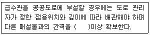
- 0.3m
- 0.5m
- 1.0m
- 1.5m
(정답률: 45%)
30. 펌프 수격작용(Water hammer)의 방지대책으로 틀린 것은?(단, 수주분리 발생의 방지법 기준)
- 펌프의 플라이흴을 제거하여 관성을 최소화한다.
- 도출측 관로에 압력조절수조를 설치해서 부압발생장소에 물을 보급하여 부압을 방지함과 아울러 압력상승도 흡수한다.
- 도출측 관로에 일방향 압력조절수조를 설치하여 압력 강사히에 물을 보급해서 부압 발생을 방지한다.
- 관내유속을 낮추거나 관거상황을 변경한다.
(정답률: 54%)
31. 상수도시설인 정수시설 중 급속 여과지의 여과모래에 대한 기준으로 틀린 것은?
- 강열감량은 0.75% 이하일 것
- 균등계수는 2.7 이하일 것
- 비중은 2.55~2.65의 범위일 것
- 마모율은 3% 이하일 것
(정답률: 59%)
32. 하수처리시설 중 소독시설에서 사용하는 오존의 장단점으로 틀린 것은?
- 병원균에 대하여 살균작용이 강하다.
- 철 및 망간의 제거능력이 크다.
- 경제성이 좋다.
- 바이러스의 불활성화 효과가 크다.
(정답률: 68%)
33. 취수지점으로부터 정수장까지 원수를 공급하는 시설 배관은?
- 취수관
- 송수관
- 도수관
- 배수관
(정답률: 75%)
34. 상수도관 부식의 종류 중 매크로셀 부식으로 분류되지 않는 것은? (단, 자연 부식 기준)
- 콘크리트ㆍ토양
- 이중금속
- 산소농당(통기차)
- 박테리아
(정답률: 69%)
35. 배수시설인 배수관의 최소동수압 및 최대정수압 기준으로 옳은 것은? (단, 급수관을 분기하는 지점에서 배수관내 수압기준)
- 100kPa 이상을 확보함, 500kPa를 초과하지 않아야 함
- 100kPa 이상을 확보함, 600kPa를 초과하지 않아야 함
- 150kPa 이상을 확보함, 700kPa를 초과하지 않아야 함
- 150kPa 이상을 확보함, 800kPa를 초과하지 않아야 함
(정답률: 73%)
36. 하수 고도처리(잔류 SS 및 잔류 용존유기물 제거)방법인 막 분리법에 적용되는 분리막 모듈 형식과 가장 거리가 먼 것은?
- 중공사형
- 투사형
- 판형
- 나선형
(정답률: 62%)
37. 계획오수량에 관한 설명으로 틀린 것은?
- 지하수량은 1인1일최대오수량의 5~10%를 표준으로 한다.
- 계획1일최대오수량은 1인1일최대오수량에 계획인구를 곱한 후, 여기에 공장 폐수량, 지하수량 및 기타 배수량을 더한 것으로 한다.
- 계획1일평균오수량은 계획1일최대오수량의 70~80%를 표준으로 한다.
- 계획시간최대오수량은 계획1일최대오수량은의 1시간당 수량의 1.3~1.8배를 표준으로 한다.
(정답률: 68%)
38. 하수슬러지 농축방법 중 잉여슬러지 농축에 부적합한 것은?
- 부상식 농축
- 중력식 농축
- 원심분리 농축
- 중력벨트 농축
(정답률: 48%)
39. 막여과 정수시설의 막을 약품 세척할 때 사용되는 약품과 제거가능 물질을 나열한 것 중 잘못된 것은?
- 수산화나트륨 : 유기물
- 황산 : 무기물
- 옥살산 : 유기물
- 산 세제 : 무기물
(정답률: 71%)
40. 하수관거의 접합방법 중 굴착 깊이를 얕게 함으로써 공사 비용을 줄일 수 있으며 수위상승을 방지하고 양정고를 줄일 수 있어 펌프로 배수하는 지역에 적합하나 상류부에서는 동수경사선이 관정보다 높이 올라 갈 우려가 있는 것은?
- 수면접합
- 관중심접합
- 관저접합
- 관정접합
(정답률: 57%)
3과목: 수질오염방지기술
41. 다음의 중금속과 그 처리방법으로 가장 거리가 먼 것은?
- 카드뮴 : 아말감 침전법
- 납 : 황화물 침전법
- 시안 : 알칼리염소법
- 비소 : 수산화물 공침법
(정답률: 50%)
42. BOD 150mg/L의 폐수 800m3/d를 깊이 2m, 표면적 300m2의 살수여상조로 처리하는 공장에서 면적 절약을 위해 기존의 살수여상조를 깊이 4m, BOD 부하 0.6kg/m3ㆍd의 활성슬러지법 폭기조로 개조하였다면 살수여상조 및 폭기조의 각 표면적만을 비교하였을 때 약 몇 m2이 절약되는가?
- 100m2
- 150m2
- 200m2
- 250m2
(정답률: 37%)
43. 처리인구 5200명인 2차 하수처리시설로 폭기식 라군 공정을 설계하고자 한다. 유량은 380L/capㆍday, 유압 BOD5는 200mg/L, 유출 BOD5 20mg/L, K(반응속도상수) = 2.1/day이며 kg BOD5당 1.6kg산소가 필요하다면 필요 반응시간에 따른 총 라군 부피는? (단, 1차 반응, 1차 침전지에서 유입 BOD5의 33% 제거된다.)
- 3360m3
- 4360m3
- 5360m3
- 6360m3
(정답률: 33%)
44. 활성슬러지 처리시설의 유출수에 대장균이 107마리/100mL가 있다고 할 때 이를 200마리/00mL 이하로 낮추기 위해 필요한 염소잔류량(C1)은? (단, 접촉시간은 20분으로 규정한다.)
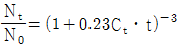
- 3.1mg/L
- 5.6mg/L
- 7.8mg/L
- 9.4mg/L
(정답률: 48%)
45. 직사각형 급속여과지를 설계하고자 한다. 설계조건이 다음과 같을 때, 급속여과지의 지수는 몇 개가 필요한가?
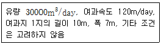
- 2
- 4
- 6
- 8
(정답률: 59%)
46. BOD 200mg/L, 유량25m3/hr인 폐수를 활성슬러지법으로 처리하고자 한다. BOD 용적부하를 0.6kg BOD/m3ㆍday로 유지하려면 폭기조의 수리학적 체류시간은?
- 4시간
- 6시간
- 8시간
- 10시간
(정답률: 50%)
47. BOD 200mg/L인 폐수가 1200m3/day로 폭기조에 유입되고 있다. 폭기조 부피는 400m3, MLSS 농도는 2000mg/L이다. F/M비를 0.15kgBOD/kgMLSSㆍd 로 유지하자면 MLSS농도를 얼마만큼 증가시켜야 되겠는가?
- 500mg/L
- 1000mg/L
- 1500mg/L
- 2000mg/L
(정답률: 57%)
48. 역삼투 장치로 하루에 20000L의 3차 처리된 유출수를 탈염시키고자 한다. 25℃에서의 물질전달 계수는 0.2068L/{(day-m2)(kPa)}, 유입수와 유출수의 압력차는 2400kPa, 유입수와 유출수의 삼투압차는 310kPa, 최저 운전온도는 10℃이다. 요구되는 막면적은? (단, A10℃ = 1.2 A25℃)
- 약 39m2
- 약 56m2
- 약 78m2
- 약 94m2
(정답률: 67%)
49. 생물학적 질소, 인 제거공정에서 폭기조의 기능과 가장 거리가 먼 것은?
- 질산화
- 유기물 제거
- 탈질
- 인 과잉섭취
(정답률: 58%)
50. 속도경사(velocity grandient)에 대한 설명으로 틀린 것은?
- 속도경사는 점성계수가 클수록 커진다.
- 속도경사는 동력이 클수록 커진다.
- 일반적으로 속도경사의 단위는 sec-1이다.
- 속도경사는 반응조 용적이 클수록 작아진다.
(정답률: 66%)
51. 폭기조내의 MLSS 3000mg/L, 폭기조 용적이 500m3인 활성슬러지 처리공법에서 최종 침전지에서 유출하는 SS를 무시할 경우 매일 20m3 슬러지를 배출시키면 세포 평균 체류시간(SRT)은? (단, 배출 슬러지 농도는 1%)
- 3.5일
- 5.5일
- 7.5일
- 9.5일
(정답률: 53%)
52. 플록을 형성하여 침강하는 입자들이 서로 방해를 받으므로 침전속도는 점차 감소하게 되며 침전하는 부유물과 상등수간에 뚜렷한 경계면이 생기는 침전형태로 가장 적합한 것은?
- 지역침전
- 압축침전
- 압밀침전
- 응집침전
(정답률: 74%)
53. 슬러지 개량을 위한 열처리의 장점으로 틀린 것은?
- 고온 분해에 따라 악취가 발생되지 않는다.
- 일반적으로 약품처리가 필요 없다.
- 슬러지를 안정화 시키고 병원균을 사멸한다.
- 슬러지 성분변화에 민감하지 않다.
(정답률: 49%)
54. 폭기조 혼합액을 30분간 침전시킬 후 침전물의 부피가 600mL/L이고 이때 MLSS가 3000mg/L이면 SVI는?
- 140
- 160
- 180
- 200
(정답률: 50%)
55. 생물학적 인 제거 공정 중 A/O 공법의 장단점으로 틀린 것은?
- 폐슬러지내의 인의 함량(1% 이하)이 낮다.
- 타공법에 비하여 운전이 비교적 간단하다.
- 높은 BOD/P 비가 요구된다.
- 비교적 수리학적 체류시간이 짧다.
(정답률: 58%)
56. 어떤 폐수의 암모니아성 질소가 10mg/L이고 동화작용에 충분한 유기탄소(CH3OH)를 공급한다. 처리장의 유량이 3000m3/day라면 미생물에 의한 완전한 동화작용 결과 생성되는 미생물생산량은? (단, 2OCH3OH+15O2+3NH3 → 3C5H7NO2+5CO2+34H2O를 적용한다.)
- 242kg/day
- 314kg/day
- 434kg/day
- 513kg/day
(정답률: 42%)
57. 폭기조의 MLSS농도를 3000mg/L로 유지하기 위한 슬러지 반송비는? (단, SVI = 120, 유입수내 SS는 무시한다.)
- 0.43
- 0.56
- 0.62
- 0.74
(정답률: 52%)
58. 폭기조의 유입수 BOD = 150mg/L, 유출수 BOD = 10mg/L, MLSS = 2500mg/L 미생물성장계수(Y) = 0.7kgMLSS/kgBOD, 내생호흡계수(ke) = 0.01day-1, 폭기시간(△t) = 6시간이다. 미생물체류시간(θc)은?
- 5.4일
- 6.8일
- 7.4일
- 8.7일
(정답률: 52%)
59. 최종 BOD 5kg을 혐기성 조건에서 안정화 시킬 때 생산되는 이론적 메탄의 양은? (단, 유기물은 C6H12O6로 가정 함)
- 0.45kg
- 1.25kg
- 2.15kg
- 3.65kg
(정답률: 55%)
60. 함수율이 98%이고 고형물내 VS함량이 65%인 축산폐수 200m3/day를 혐기성소화로 처리하고자 한다. 혐기성 소화조의 고형물 부하를 7.5kgVS/m3-day로 설계하고자 할 때 소화조의 용량은? (단, 축산폐수나 고형물의 비중은 1.0이다.)
- 238m3
- 347m3
- 436m3
- 583m3
(정답률: 42%)
4과목: 수질오염공정시험기준
61. 총유기탄소 분석기기 내 산화부에서 유기탄소를 이산화탄소로 산화하는 방법으로 옳게 짝지은 것은?
- 고온연소 산화방법, 저온연소 산화방법
- 고온연소 산화방법, 전기전도도 산화방법
- 고온연소 산화방법, 자외선-과황산 산화방법
- 고온연소 산화방법, 비분산적외선 산화방법
(정답률: 53%)
62. 음이온 계면활성제를 자외선/가시선 분광법으로 측정할 때 사용되는 시약으로 옳은 것은?
- 메틸 레드
- 메틸 오렌지
- 메틸렌 블루
- 메틸렌 옐로우
(정답률: 70%)
63. 자외선/가시선 분광법을 적용한 불소측정에 관한 설명으로 틀린 것은?
- 란탄알리자린 콤프렉손의 착화합물이 불소이온과 반응 생성하는 청색의 복합 착화합물의 흡광도를 620nm에서 측정한다.
- 정량한계는 0.03mg/L이다.
- 알루미늄 및 철의 방해가 크나 증류하면 영향이 없다.
- 전처리법으로 직접증류법과 수증기증류법이 있다.
(정답률: 54%)
64. 부유물질 측정시 간섭물질에 관한 설명으로 틀린 것은?
- 증발잔류물이 1000mg/L 이상인 경우 해수, 공장폐수 등은 특별히 취급하지 않을 경우, 높은 부유물질 값을 나타낼 수 있다.
- 큰 모래입자 등과 같은 큰 입자들은 부유물질 측정에 방해를 주며 이 경우 직경 1mm 여과지에 먼저 통과시킨 후 분석을 실시한다.
- 철 또는 칼슘이 높은 시료는 금속침전이 발생하며 부유물질 측정에 영향을 줄 수 있다.
- 유지 및 혼합되지 않는 유기물도 여과지에 남아 부유물질 측정값을 높게 할 수 있다.
(정답률: 61%)
65. 다음 금속류 분석 시료 중 최대 보존기간이 가장 짧은 것은?
- 비소
- 셀레늄
- 알킬수은
- 6가크롬
(정답률: 44%)
66. 온도 측정시 사용되는 용어 중 ‘담금’에 관한 내용으로 옳은 것은?
- 온도 측정을 위해 대상 시료에 담그는 것으로 온담금과 반담금이 있다.
- 온도 측정을 위해 대상 시료에 담그는 것으로 온담금과 부분담금이 있다.
- 온도 측정을 위해 대상 시료에 담그는 것으로 온담금과 55mm담금이 있다.
- 온도 측정을 위해 대상 시료에 담그는 것으로 온담금과 76mm담금이 있다.
(정답률: 50%)
67. 다음은 자외선/가시선 분광법을 적용하여 페놀류를 측정할 때 간섭물질에 관한 설명이다. ( )안에 옳은 내용은?
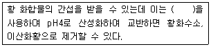
- 염산
- 질산
- 인산
- 과염소산
(정답률: 56%)
68. 적정법으로 염소이온을 측정할 때 정량한계로 옳은 것은?
- 0.1mg/L
- 0.3mg/L
- 0.5mg/L
- 0.7mg/L
(정답률: 27%)
69. 웨어의 수두가 0.8m, 절단의 폭이 5m인 4각 웨어를 사용하여 유량을 측정하고자 한다. 유량계수가 1.6일 때 유량(m3/day)은?
- 약 4345
- 약 6925
- 약 8245
- 약 10370
(정답률: 50%)
70. 다음은 대장균(효소이용정량법) 측정에 관한 내용이다. ( )안에 옳은 내용은?
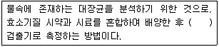
- 자외선
- 적외선
- 가시선
- 기전력
(정답률: 59%)
71. 냄새 측정시 잔류염소 제거를 위해 첨가하는 용액은?
- L-아스코빈산나트륨
- 티오황산나트륨
- 과망간산칼륨
- 질산은
(정답률: 51%)
72. 다음은 관내의 압력이 필요하지 않는 측정용 수로에서 유량을 측정하는데 적용하는 방법 중 용기에 의한 측정에 관한 내용이다. ( )안에 옳은 내용은?
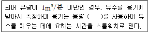
- 100L~200L
- 200L~300L
- 300L~400L
- 400L~500L
(정답률: 52%)
73. 총질소 실험방법과 가장 거리가 먼 것은? (단, 수질오염공정시험기준 적용)
- 연속흐름법
- 자외선/가시선 분광법 - 활성탄흡착법
- 자외선/가시선 분광법 - 카드뮴ㆍ구리 환원법
- 자외선/가시선 분광법 - 환원증류ㆍ킬달법
(정답률: 35%)
74. 금속류인 바륨의 시험방법과 가장 거리가 먼 것은? (단, 수질오염공정시험기준 적용)
- 불꽃원자흡수분광광도법
- 자외선/가시선 분광법
- 유도결합플라스마 원자발광분광법
- 유도결합플라스마 질량분석법
(정답률: 49%)
75. 수질오염공정시험기준 총칙에 관한 설명으로 옳지 않은 것은?
- 분석용 저울은 0.1mg까지 달 수 있는 것이어야 한다.
- 시험결과의 표시는 정량한계의 결과 표시 자리수를 따르며, 정량한계 미만은 불검출된 것으로 간주한다.
- ‘바탕시험을 하여 보정한다’라 함은 시료를 사용하여 같은 방법으로 조작한 측정치를 보정하는 것을 말한다.
- ‘정확히 취하여’라 하는 것은 규정한 양의 액체를 부피피펫으로 눈금까지 취하는 것을 말한다.
(정답률: 64%)
76. 다음 항목 중 시료 보존 방법이 나머지와 다른 것은?
- 전기전도도
- 아질산성 질소
- 잔류염소
- 음이온계면활성제
(정답률: 34%)
77. 수질오염공정시험기준상 이온전극법으로 측정할 수 있는 대상 항목과 가장 거리가 먼 것은?
- 브롬
- 시안
- 암모니아성 질소
- 염소이온
(정답률: 32%)
78. 다음은 자외선/가시선 분광법을 적용한 니켈의 측정 방법에 관한 내용이다. ( )안에 옳은 내용은?
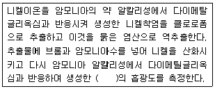
- 적색 니켈착염
- 청색 니켈착염
- 적갈색 니켈착염
- 황갈색 니켈착염
(정답률: 55%)
79. 다음은 크롬 분석에 관한 내용이다. ( )안에 옳은 내용은? (단, 크롬-자외선/가시선 분광법 기준)
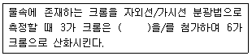
- 과망간산칼륨
- 염화제일주석
- 과염소산나트륨
- 사염화탄소
(정답률: 54%)
80. 파샬수로(Parshall flume)에 대한 설명으로 옳은 것은?
- 수두차가 작은 경우에는 유량 측정의 정확도가 현저히 떨어진다.
- 부유물질 또는 토사 등이 많이 섞여 있는 경우에는 목(throat)부분에 부유물질의 침전이 다량 발생되어 자연유하가 어렵다.
- 재질은 부식에 대한 내구성이 강한 스테인레스 강판, 염화비닐합성수지 등을 이용하며 면처리는 매끄럽게 처리하여 가급적 마찰로 인한 수두손실을 적게 한다.
- 관형 및 장방형으로 구분되며 패러데이(Faraday)의 법칙을 이용한다.
(정답률: 37%)
5과목: 수질환경관계법규
81. 시도지사가 골프장의 맹독성ㆍ고독성 농약의 사용여부를 확인하기 위해 골프장별로 농약사용량을 조사하고 농약잔류량을 검사하여야 하는 주기 기준은?
- 월 마다
- 분기 마다
- 반기 마다
- 년 마다
(정답률: 58%)
82. 다음은 환경부장관이 지정할 수 있는 비점오염원관리지역의 지정기준에 관한 내용이다. ( )안에 옳은 내용은?
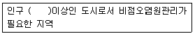
- 10만 명
- 30만 명
- 50만 명
- 100만 명
(정답률: 56%)
83. 다음은 오염총량관리 조사ㆍ연구반에 관한 내용이다. ( )안에 옳은 내용은?
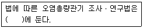
- 한국환경공단
- 국립환경과학원
- 유역환경청
- 수질환경 원격조사센터
(정답률: 47%)
84. 환경부장관이 수립하는 대권역별 수질 및 수생태계 보전을 위한 기본계획(대권역계획)에 포함되어야 하는 사항과 가장 거리가 먼 것은?
- 상수원 및 물 이용현황
- 수질 및 수생태계 보전조치의 추진방향
- 수질오염 예방 및 저감대책
- 수질오염에 대한 환경영향평가
(정답률: 41%)
85. 다음은 환경부장관이 수변생태구역 매수 등을 하기 위한 기준에 관한 내용이다. ( )안에 옳은 내용은?
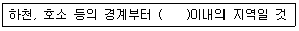
- 200미터
- 300미터
- 500미터
- 1킬로미터
(정답률: 40%)
86. 특별시장ㆍ광역시장ㆍ특별자치도지사가 오염총량관리 시행계획을 수립할 때 포함하여야 하는 사항과 가장 거리가 먼 것은?
- 해당 지역 개발계획의 내용
- 수질예측 산정자료 및 이행 모니터링 계획
- 연차별 오염부하량 삭감목표 및 구체적 삭감 방안
- 오염원 현황 및 예측
(정답률: 36%)
87. 사업자가 배출시설 또는 방지시설의 설치를 완료하여 당해 배출시설 및 방지시설을 가동하고자 하는 때에는 환경부령이 정하는 바에 의하여 미리 환경부 장관에게 가동개시 신고를 하여야 한다. 이를 위한하여 가동개시 신고를 하지 아니하고 조업한 자에 대한 벌칙 기준은?
- 2백만원 이하의 벌금
- 3백만원 이하의 벌금
- 5백만원 이하의 벌금
- 1년 이하의 징역 또는 1천만원 이하의 벌금
(정답률: 49%)
88. 시도지사는 공공수역의 수질보전을 위하여 환경부령이 정하는 해발고도 이상에 위치한 농경지 중 환경부령이 정하는 경사도 이상의 농경지를 경작하는 자에 대하여 경작방식의 변경, 농약ㆍ비료의 사용량 저감, 휴경 등을 권고할 수 있다. 위에서 언급한 환경부령이 정하는 해발고도와 경사도 기준으로 옳은 것은?
- 400미터, 15퍼센트
- 400미터, 25퍼센트
- 600미터, 15퍼센트
- 600미터, 25퍼센트
(정답률: 59%)
89. 다음의 수질오염방지시설 중 물리적 처리시설이 아닌 것은?
- 혼합시설
- 침전물 개량시설
- 응집시설
- 유수분리시설
(정답률: 51%)
90. 다음은 수질 및 수생태계 하천 환경기준 중 생활환경 기준에 적용되는 등급에 따른 수질 및 수생태계 상태를 나타낸 것이다. 어떤 등급의 수질 및 수생태계의 상태인가?
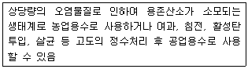
- 약간 나쁨
- 나쁨
- 상당히 나쁨
- 매우 나쁨
(정답률: 49%)
91. 다음은 호소수 이용 상황 등의 조사 측정에 관한 내용이다. ( )안에 옳은 내용은?
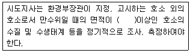
- 10만 제곱미터
- 20만 제곱미터
- 30만 제곱미터
- 50만 제곱미터
(정답률: 46%)
92. 환경부장관이 설치할 수 있는 측정망의 종류와 가장 거리가 먼 것은?
- 비점오염원에서 배출되는 비점오염물질 측정망
- 퇴적물 측정망
- 도심하천 측정망
- 공공수역 유해물질 측정망
(정답률: 63%)
93. 비점오염원의 변경신고 기준으로 옳은 것은?
- 총 사업면적ㆍ개발면적 또는 사업장 부지면적이 처음 신고면적의 100분의 15이상 증가하는 경우
- 총 사업면적ㆍ개발면적 또는 사업장 부지면적이 처음 신고면적의 100분의 20이상 증가하는 경우
- 총 사업면적ㆍ개발면적 또는 사업장 부지면적이 처음 신고면적의 100분의 30이상 증가하는 경우
- 총 사업면적ㆍ개발면적 또는 사업장 부지면적이 처음 신고면적의 100분의 50이상 증가하는 경우
(정답률: 23%)
94. 수질오염경보 중 수질오염감시경보 단계가 ‘관심’인 경우 한국환경공단이사장의 조치 사항으로 옳은 것은?
- 수체변화 감시 및 원인 조사
- 지속적 모니터링을 통한 감시
- 관심경보 발령 및 관계기관 통보
- 원인조사 및 오염물질 추적 조사 지원
(정답률: 51%)
95. 제조업의 배출시설(폐수무방류배출시설 제외)을 설치, 운영하는 사업자에 대하여 환경부장관이 조업정지처분에 갈음하여 부과할 수 있는 과징금의 최대 액수는?
- 1억
- 2억
- 3억
- 5억
(정답률: 34%)
96. 오염총량관리 기본방침에 포함되어야 하는 사항과 가장 거리가 먼 것은?
- 오염총량관리 대상지역
- 오염원의 조사 및 오염부하량 산정방법
- 오염총량관리의 대상 수질오염물질 종류
- 오염총량관리의 목표
(정답률: 44%)
97. 폐수종말처리시설의 방류수 수질기준으로 틀린 것은? (단, I 지역 기준, ( )는 농공단지 폐수종말처리시설의 방류수 수질기준임)
- BOD : 10(10)mg/L 이하
- COD : 20(40)mg/L 이하
- 총질소(T-N) : 10(10)mg/L 이하
- 총인(T-P) : 0.2(0.2)mg/L 이하
(정답률: 29%)
98. 환경기술인 등의 교육기간ㆍ대상자 등에 관한 내용으로 틀린 것은?
- 최초교육 : 환경기술인 등이 최초로 업무에 종사한 날부터 1년 이내에 실시하는 교육
- 보수교육 : 최초 교육 후 3년 마다 실시하는 교육
- 환경기술인 교육기관 : 환경관리협회
- 기술요원 교육기관 : 국립환경인력개발원
(정답률: 65%)
99. 수질 및 수생태계 환경기준 중 하천의 수질 및 수생태계 상태별 생물학적 특성 이해표 내용 중 생물등급이 [좋음-보통]인 경우, 생물지표종(저서생물)이 아닌 것은?
- 붉은 딸따구
- 다슬기
- 넓적거머리
- 동양하루살이
(정답률: 38%)
100. 다음은 폐수무방류배출시설의 세부설치기준에 관한 내용이다. ( )안에 옳은 내용은?
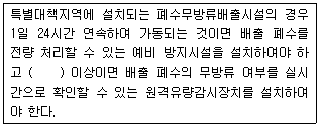
- 1일 최대 폐수발생량이 100세제곱미터
- 1일 최대 폐수발생량이 200세제곱미터
- 1일 최대 폐수발생량이 300세제곱미터
- 1일 최대 폐수발생량이 500세제곱미터
(정답률: 38%)